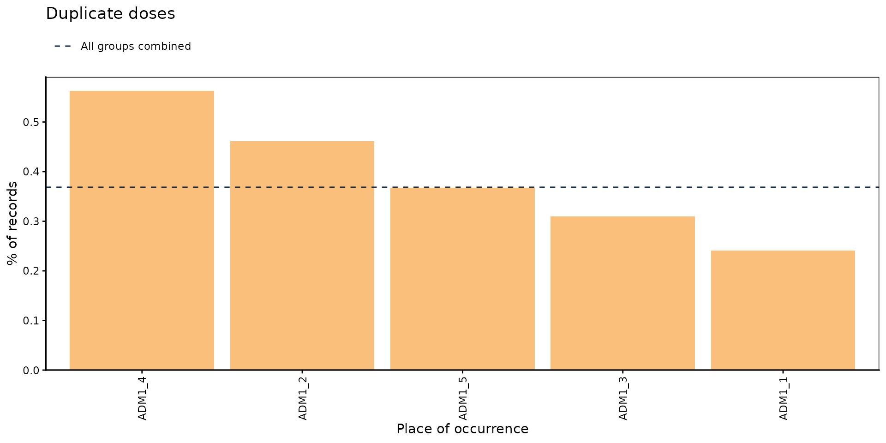
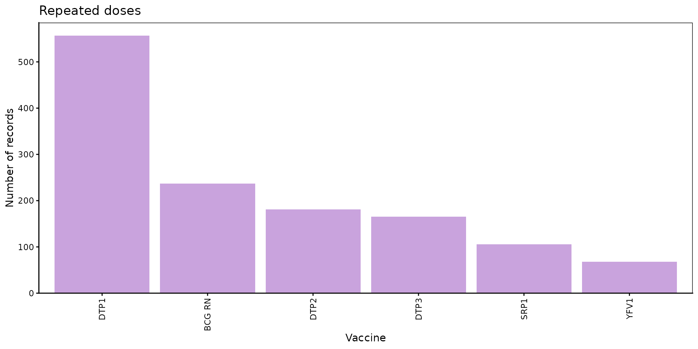
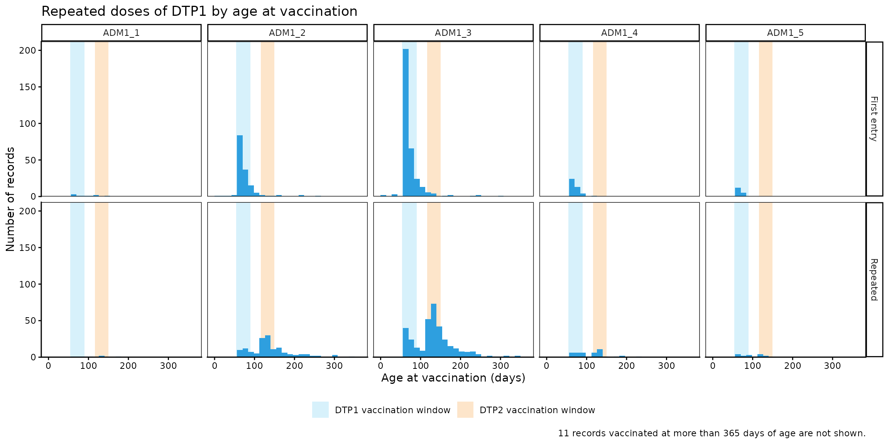

Dosis duplicadas
OPS/CIM
9 de noviembre de 2026
Source:vignettes/articles/es/duplicate_doses_es.Rmd
duplicate_doses_es.RmdFundamento
Cada dosis que recibe una persona debería registrarse exactamente una vez en el Registro Nominal de Vacunación electrónico (RNVe). En la práctica, es frecuente que una misma dosis se registre más de una vez para la misma persona. Cada registro adicional aumenta el número de dosis administradas, por lo que sobreestima las coberturas calculadas a partir de dosis, y distorsiona cualquier análisis que dependa del número de dosis, como los análisis de secuencia de dosis o de esquema completo.
El módulo de dosis duplicadas compara todos los registros de una misma persona y dosis, y clasifica cada registro adicional según cuándo y dónde fue registrado:
- Duplicado: el registro adicional tiene la misma fecha y el mismo lugar de vacunación que un registro anterior, es decir, el mismo evento de vacunación registrado más de una vez.
- Repetido: el registro adicional tiene una fecha o un lugar de vacunación diferente, es decir, la misma dosis registrada en otro momento o en otro lugar.
Estas categorías describen cómo coinciden los registros, no por qué la dosis se registró más de una vez. Ambas pueden deberse a errores de digitación (p. ej., un registro digitado dos veces, datos cargados dos veces al migrar desde un sistema anterior, o una dosis registrada con un número de dosis equivocado) o a errores programáticos (p. ej., una dosis administrada dos veces porque no se revisó el historial de vacunación de la persona). Los gráficos y la tabla a nivel de registro de este módulo ayudan a investigar estas posibles causas.
Dado que los registros duplicados y repetidos son un problema de calidad de datos de cada evento de vacunación, todos los resultados se refieren al lugar de vacunación (ocurrencia), y no al lugar de residencia.
Nota
Todas las funciones utilizadas para los análisis de dosis duplicadas dentro de immunABC comienzan con el prefijo
dd_.
Glosario
Divisiones político-geográficas
A lo largo de esta viñeta se hace referencia a distintos niveles de división político-geográfica. Estos niveles son definidos por cada país o territorio y pueden recibir nombres diferentes. immunABC no depende de esos nombres locales; por eso, el usuario debe recodificar sus variables para ajustarlas a la estructura que utiliza el paquete.
En concreto, immunABC puede distinguir tres niveles administrativos que, listados del nivel superior al inferior, son: ADM0, ADM1 y ADM2.
- ADM0: El país. Este es el nivel administrativo más alto.
- ADM1: La primera subdivisión geográfica del país. ADM0 contiene varias subdivisiones ADM1.
- ADM2: La segunda subdivisión geográfica del país. Cada ADM1 contiene varias subdivisiones ADM2.
Categorías de duplicación
Todos los registros de una misma persona (ID) y dosis
(dose) se comparan en orden de fecha de vacunación. El
primer registro se considera el legítimo, y cada registro posterior se
clasifica comparándolo con los anteriores:
-
FIRST_ENTRY: el primer registro de esa persona y dosis. Nunca se cuenta como un problema. -
DUPLICATE: mismosID,dose,date_vax,ADM1_occurrenceyADM2_occurrenceque un registro anterior. -
REPEATED: mismosIDydoseque un registro anterior, pero con unadate_vaxo un lugar de vacunación diferente.
Solo se cuentan los registros adicionales, por lo que una dosis registrada tres veces cuenta como dos. Por ejemplo, una persona con DTP1 registrada tres veces:
date_vax |
Lugar de vacunación | Categoría | Motivo |
|---|---|---|---|
| 5 de enero | ADM2_1_1 |
FIRST_ENTRY |
Primer registro de esta persona y dosis. |
| 10 de febrero | ADM2_1_1 |
REPEATED |
Misma dosis, pero en una fecha diferente. |
| 10 de febrero | ADM2_1_1 |
DUPLICATE |
Idéntico al registro anterior. |
Tenga en cuenta que un registro con la misma fecha que uno anterior
pero con un lugar de vacunación diferente es REPEATED y no
DUPLICATE, ya que la misma dosis podría haber sido
registrada por dos establecimientos de vacunación distintos.
Registros no evaluados
Los registros sin ID, dose,
date_vax, ADM1_occurrence o
ADM2_occurrence no contienen información suficiente para
saber si coinciden con otro registro, por lo que no se evalúan (los
valores NA y los textos vacíos o compuestos solo por
espacios se consideran faltantes). Las funciones muestran un mensaje con
el número de registros excluidos.
Uso
Cargar los datos
Las funciones de este módulo requieren su conjunto de datos
del RNVe en el formato estándar de immunABC. De manera
opcional, dd_repeat_plot() puede utilizar un
esquema de vacunación para mostrar la ventana de
vacunación de cada dosis.
RNVe
El data frame immunabc::immunABC.EIR contiene una tabla
simulada a nivel nominal que representa eventos individuales de
vacunación de un Registro Nominal de Vacunación electrónico (RNVe). Cada
fila corresponde a un único acto de vacunación de una persona.
immunABC.EIR %>% head() %>% kable(caption = "Ejemplo de Registro Nominal de Vacunación electrónico")| ID | date_birth | date_vax | ADM1_residence | ADM2_residence | ADM1_occurrence | ADM2_occurrence | dose |
|---|---|---|---|---|---|---|---|
| 191997 | 2023-08-08 | 2023-12-26 | ADM1_4 | ADM2_4_35 | ADM1_4 | ADM2_4_35 | DTP2 |
| 212189 | 2023-12-20 | 2023-12-26 | ADM1_5 | ADM2_5_61 | ADM1_5 | ADM2_5_61 | BCG RN |
| 118063 | 2022-09-15 | 2023-12-26 | ADM1_2 | ADM2_2_5 | ADM1_2 | ADM2_2_5 | DTP1 |
| 118063 | 2022-09-15 | 2023-12-26 | ADM1_2 | ADM2_2_5 | ADM1_2 | ADM2_2_5 | YFV1 |
| 130751 | 2022-10-27 | 2023-12-12 | ADM1_5 | ADM2_5_55 | ADM1_5 | ADM2_5_55 | YFV1 |
| 136532 | 2021-09-21 | 2023-12-26 | ADM1_3 | ADM2_3_12 | ADM1_3 | ADM2_3_12 | SRP1 |
-
ID: Número único de identificación de la persona. -
date_birth: Fecha de nacimiento de la persona. -
date_vax: Fecha del evento de vacunación. -
ADM1_residence/ADM2_residence: Primer y segundo nivel administrativo geográfico de residencia. -
ADM1_occurrence/ADM2_occurrence: Primer y segundo nivel administrativo geográfico donde ocurrió la vacunación. -
dose: Variable combinada que representa el tipo de vacuna y el número de dosis (p. ej., DTP1).
Esquema de vacunación
El data frame immunabc::immunABC.schedule define la
edad, en días, a la que debería administrarse cada dosis.
immunABC.schedule %>% kable(caption = "Ejemplo de esquema de vacunación")| dose | age_schedule | age_schedule_low | age_schedule_high |
|---|---|---|---|
| SRP1 | 365 | 360 | 420 |
| DTP1 | 60 | 54 | 90 |
| DTP2 | 120 | 116 | 150 |
| DTP3 | 180 | 176 | 210 |
| BCG RN | 0 | 0 | 28 |
| YFV1 | 365 | 360 | 420 |
-
dose: Variable combinada que representa el tipo de vacuna y el número de dosis (p. ej., DTP1). -
age_schedule: Edad recomendada de vacunación, en días. -
age_schedule_low/age_schedule_high: Límites inferior y superior de la ventana de vacunación, en días.
Análisis de dosis duplicadas
Flujo de trabajo esperado
El conjunto de funciones dd_ contiene siete funciones,
organizadas en tres flujos:
-
dd_rate()— calcula el porcentaje de registros duplicados y repetidos, por nivel geográfico y, de manera opcional, por dosis o cohorte de nacimiento.-
dd_barplot()— visualiza el resultado dedd_rate()como un gráfico de barras. -
dd_heatmap()— visualiza el resultado dedd_rate()como un mapa de calor de áreas geográficas frente a dosis o cohortes de nacimiento.
-
-
dd_trend()— calcula el porcentaje de registros duplicados por mes de vacunación.-
dd_trend_plot()— visualiza el resultado dedd_trend()como un gráfico de líneas.
-
-
dd_duplicates()— lista todos los registros de cada dosis registrada más de una vez, para su revisión y corrección a nivel de registro.-
dd_repeat_plot()— compara la edad de vacunación de los primeros registros y de los registros repetidos de una dosis.
-
La figura siguiente muestra el flujo de trabajo esperado.

Paso 1 — Calcular los registros duplicados y repetidos con
dd_rate()
dd_rate() clasifica cada registro y devuelve, para cada
grupo, el número y el porcentaje de registros DUPLICATE y
REPEATED. El denominador (total) son todos los
registros evaluados del grupo, incluidos los primeros registros y los de
dosis registradas una sola vez.
dd_rate(data.EIR = immunABC.EIR) %>%
kable(digits = 2, caption = "Registros duplicados y repetidos a nivel nacional")| duplication | n | total | rate |
|---|---|---|---|
| DUPLICATE | 1816 | 492688 | 0.37 |
| REPEATED | 1314 | 492688 | 0.27 |
Los resultados pueden desagregarse geográficamente con
geo_level, y por una variable adicional con
disaggregate_by: "dose" o
"birth_cohort" (año de nacimiento).
rate_adm1 <- dd_rate(
data.EIR = immunABC.EIR,
geo_level = "ADM1"
)
rate_adm1 %>% kable(digits = 2, caption = "Registros duplicados y repetidos por ADM1 de vacunación")| ADM1 | duplication | n | total | rate |
|---|---|---|---|---|
| ADM1_1 | DUPLICATE | 34 | 14099 | 0.24 |
| ADM1_1 | REPEATED | 33 | 14099 | 0.23 |
| ADM1_2 | DUPLICATE | 527 | 114336 | 0.46 |
| ADM1_2 | REPEATED | 290 | 114336 | 0.25 |
| ADM1_3 | DUPLICATE | 912 | 294763 | 0.31 |
| ADM1_3 | REPEATED | 815 | 294763 | 0.28 |
| ADM1_4 | DUPLICATE | 253 | 44965 | 0.56 |
| ADM1_4 | REPEATED | 131 | 44965 | 0.29 |
| ADM1_5 | DUPLICATE | 90 | 24525 | 0.37 |
| ADM1_5 | REPEATED | 45 | 24525 | 0.18 |
rate_dose <- dd_rate(
data.EIR = immunABC.EIR,
disaggregate_by = "dose"
)
rate_dose %>%
filter(duplication == "DUPLICATE") %>%
kable(digits = 2, caption = "Registros duplicados por dosis")| dose | duplication | n | total | rate |
|---|---|---|---|---|
| BCG RN | DUPLICATE | 536 | 82224 | 0.65 |
| DTP1 | DUPLICATE | 541 | 83356 | 0.65 |
| DTP2 | DUPLICATE | 230 | 81553 | 0.28 |
| DTP3 | DUPLICATE | 190 | 82080 | 0.23 |
| SRP1 | DUPLICATE | 136 | 80504 | 0.17 |
| YFV1 | DUPLICATE | 183 | 82971 | 0.22 |
Parámetros aceptados
-
data.EIR: Data frame del RNVe en formato immunABC. -
geo_level: Nivel geográfico de vacunación:"ADM0"(por defecto),"ADM1"o"ADM2". -
disaggregate_by: Una variable adicional por la cual desagregar:"dose"o"birth_cohort". Por defectoNULL(sin desagregación adicional). Con"birth_cohort", los registros sindate_birthse excluyen, con un mensaje. -
vaccines: Vector de caracteres con las dosis a incluir, p. ej.c("DTP1", "DTP2", "DTP3"). Es solo un filtro: usedisaggregate_by = "dose"para ver los resultados por dosis. Por defectoNULLutiliza todas las dosis. -
birth_cohorts: Vector numérico con el o los años de cohorte de nacimiento a filtrar. Es solo un filtro: usedisaggregate_by = "birth_cohort"para ver los resultados por cohorte. Por defectoNULLutiliza todas las cohortes disponibles.
El resultado contiene una fila por cada categoría de
duplication (DUPLICATE y
REPEATED) en cada grupo, con el número de registros en esa
categoría (n), el total de registros evaluados en el grupo
(total) y el porcentaje (rate).
Paso 2 — Visualizar los registros duplicados con
dd_barplot()
El resultado de dd_rate() puede entregarse directamente
a dd_barplot(). Las áreas geográficas se muestran en el eje
x si están presentes; de lo contrario, se muestran las dosis o cohortes
de nacimiento. Cuando los datos tienen ambas desagregaciones, las dosis
o cohortes de nacimiento se muestran en paneles. Al mostrar porcentajes,
una línea discontinua indica el porcentaje de todos los grupos
combinados.
dd_barplot(data = rate_adm1)
Por defecto, el gráfico muestra el porcentaje de registros
DUPLICATE. Use duplication = "repeated" para
mostrar los registros REPEATED, y value = "n"
para mostrar el número de registros en lugar de su porcentaje:
dd_barplot(
data = rate_dose,
duplication = "repeated",
value = "n"
)
A nivel ADM2, within_ADM1 permite enfocarse en las áreas
de uno o varios ADM1, y min_total oculta las barras con
pocos registros, ya que sus porcentajes pueden ser engañosos:
rate_adm2 <- dd_rate(
data.EIR = immunABC.EIR,
geo_level = "ADM2"
)
dd_barplot(
data = rate_adm2,
within_ADM1 = "ADM1_3",
min_total = 1000
)
Parámetros aceptados
-
data: Resultado dedd_rate(). -
value: Qué mostrar en el eje y:"rate"(por defecto) o"n". -
duplication: Qué registros mostrar:"duplicate"(por defecto) o"repeated". -
within_ADM1: Vector de caracteres para filtrar ADM1 específicos cuandogeo_level = "ADM2". Por defecto:NULL. -
min_total: Número mínimo de registros para mostrar una barra. Las barras ocultas siguen contando para la línea discontinua. Por defecto:NULL(se muestran todas las barras).
Interpretación
Los registros duplicados suelen ser un porcentaje pequeño del total,
por lo que el eje y se ajusta a los datos en lugar de ir de 0 a 100%.
Los porcentajes y los números responden a preguntas distintas:
value = "rate" muestra dónde el problema es
proporcionalmente mayor, lo que apunta a prácticas de registro que
conviene revisar, mientras que value = "n" muestra dónde se
concentra la mayor cantidad de registros a corregir, que es donde un
esfuerzo de limpieza tendrá mayor impacto. Las barras muy por encima de
la línea discontinua son las primeras candidatas a revisión.
Paso 3 — Combinar dos desagregaciones con
dd_heatmap()
dd_heatmap() muestra el resultado de
dd_rate() para cada área geográfica (columnas) frente a
cada dosis o cohorte de nacimiento (filas), por lo que data
debe provenir de dd_rate() con geo_level en
"ADM1" o "ADM2" y un valor para
disaggregate_by.
rate_adm1_dose <- dd_rate(
data.EIR = immunABC.EIR,
geo_level = "ADM1",
disaggregate_by = "dose"
)
dd_heatmap(data = rate_adm1_dose)
Por cohorte de nacimiento, filtrando las cohortes más recientes con
birth_cohorts:
rate_adm1_cohort <- dd_rate(
data.EIR = immunABC.EIR,
geo_level = "ADM1",
disaggregate_by = "birth_cohort",
birth_cohorts = 2021:2023
)
dd_heatmap(data = rate_adm1_cohort)
Parámetros aceptados
-
data: Resultado dedd_rate()congeo_levelen"ADM1"o"ADM2"y un valor paradisaggregate_by. -
value: Qué mostrar en las celdas:"rate"(por defecto) o"n". -
duplication: Qué registros mostrar:"duplicate"(por defecto) o"repeated". -
within_ADM1: Vector de caracteres para filtrar ADM1 específicos cuandogeo_level = "ADM2". Por defecto:NULL. -
min_total: Número mínimo de registros para rellenar una celda. Las demás celdas quedan en gris y vacías. Por defecto:NULL(se rellenan todas las celdas). -
digits: Número de decimales en las celdas cuandovalue = "rate". Por defecto:1. -
show_numbers: Lógico, por defectoTRUE. Indica si se muestra el número en cada celda o, en su lugar, una leyenda de colores. UseFALSEcuando haya demasiadas celdas para leerlas (p. ej., a nivel ADM2).
Interpretación
Una fila oscura en todas las áreas indica un problema de esa dosis o
cohorte en todo el país, por ejemplo una dosis que el sistema de
información registra dos veces de forma sistemática. Una columna oscura
indica un problema de esa área en todas las dosis, lo que sugiere una
práctica de registro local. Una única celda oscura es un problema
específico de un área y una dosis o cohorte. En el ejemplo,
ADM1_4 tiene los porcentajes más altos para la mayoría de
las dosis, y BCG RN y DTP1 tienen los
porcentajes más altos en todas las áreas.
Paso 4 — Seguir los registros duplicados en el tiempo con
dd_trend() y dd_trend_plot()
dd_trend() realiza el mismo cálculo que
dd_rate(), pero por mes de vacunación
(month_vax, el primer día de cada mes), para detectar
tendencias en el tiempo. Solo se incluyen los registros
DUPLICATE: los registros repetidos se exploran mejor con
dd_repeat_plot() (ver el Paso 6).
trend_adm1 <- dd_trend(
data.EIR = immunABC.EIR,
geo_level = "ADM1"
)
trend_adm1 %>% head() %>% kable(digits = 2, caption = "Registros duplicados por ADM1 y mes de vacunación")| ADM1 | month_vax | duplication | n | total | rate |
|---|---|---|---|---|---|
| ADM1_1 | 2022-01-01 | DUPLICATE | 0 | 484 | 0.00 |
| ADM1_1 | 2022-02-01 | DUPLICATE | 1 | 558 | 0.18 |
| ADM1_1 | 2022-03-01 | DUPLICATE | 3 | 590 | 0.51 |
| ADM1_1 | 2022-04-01 | DUPLICATE | 3 | 468 | 0.64 |
| ADM1_1 | 2022-05-01 | DUPLICATE | 2 | 510 | 0.39 |
| ADM1_1 | 2022-06-01 | DUPLICATE | 5 | 555 | 0.90 |
dd_trend_plot() dibuja todas las áreas combinadas como
una línea destacada, y cada área geográfica como una línea gris delgada
a modo de contexto. Se pueden destacar en color hasta 5 áreas con
highlight:
dd_trend_plot(
data = trend_adm1,
highlight = "ADM1_4"
)
Parámetros aceptados
-
data.EIR: Data frame del RNVe en formato immunABC. -
geo_level: Nivel geográfico de vacunación:"ADM0"(por defecto),"ADM1"o"ADM2". -
vaccines: Vector de caracteres con las dosis a incluir. Por defectoNULLutiliza todas las dosis. -
birth_cohorts: Vector numérico con el o los años de cohorte de nacimiento a filtrar. Por defectoNULLutiliza todas las cohortes disponibles.
-
data: Resultado dedd_trend(). -
value: Qué mostrar en el eje y:"rate"(por defecto) o"n". Con"n", todas las áreas combinadas corresponden a la suma de todas las áreas, por lo que su valor puede ser mucho mayor que el de cualquier área individual. -
highlight: Hasta 5 áreas geográficas a destacar en color. Solo disponible cuandodataestá desagregado por ADM1 o ADM2. Por defecto:NULL. -
within_ADM1: Vector de caracteres para filtrar ADM1 específicos cuandogeo_level = "ADM2". En ese caso, todas las áreas combinadas se refiere solo a esas áreas. Por defecto:NULL. -
min_total: Número mínimo de registros para mostrar un área en un mes determinado; de lo contrario, las líneas quedan con espacios vacíos. Es útil porque los porcentajes basados en pocos registros pueden ser engañosos y estirar el eje y. Por defecto:NULL(se muestran todos los meses).
Interpretación
Los errores de digitación tienden a distribuirse de forma pareja en
el tiempo, por lo que, cuando los registros duplicados se concentran en
pocos meses, es posible que los registros de esos meses se hayan
ingresado dos veces, por ejemplo al cargar datos históricos de un
sistema anterior en el RNVe, o al digitalizar dos veces un lote de
registros en papel. En el ejemplo, los duplicados se concentran
claramente en el primer semestre de 2022, en particular en
ADM1_4, y casi desaparecen después. Por otro lado, un
aumento repentino en una fecha posterior puede indicar un cambio en el
sistema de información o en las prácticas de registro.
Paso 5 — Inspeccionar los registros individuales con
dd_duplicates()
dd_duplicates() devuelve una tabla a nivel de registro
con todos los registros de cada dosis registrada más de una vez para la
misma persona, incluido el FIRST_ENTRY, de modo que los
registros posteriores puedan compararse con él. Los grupos con más
copias se muestran primero.
duplicates_df <- dd_duplicates(data.EIR = immunABC.EIR)
duplicates_df %>%
filter(dose == "DTP1", n_copies == 2) %>%
head(6) %>%
kable(caption = "Muestra de dosis DTP1 registradas dos veces")| ID | date_birth | dose | date_vax | ADM1_occurrence | ADM2_occurrence | group | copy | n_copies | days_since_first_entry | duplication |
|---|---|---|---|---|---|---|---|---|---|---|
| 11254 | 2021-10-07 | DTP1 | 2022-01-05 | ADM1_2 | ADM2_2_5 | 168 | 1 | 2 | NA | FIRST_ENTRY |
| 11254 | 2021-10-07 | DTP1 | 2022-05-11 | ADM1_3 | ADM2_3_15 | 168 | 2 | 2 | 126 | REPEATED |
| 12223 | 2021-10-18 | DTP1 | 2022-01-10 | ADM1_3 | ADM2_3_6 | 170 | 1 | 2 | NA | FIRST_ENTRY |
| 12223 | 2021-10-18 | DTP1 | 2022-06-14 | ADM1_3 | ADM2_3_6 | 170 | 2 | 2 | 155 | REPEATED |
| 12415 | 2021-10-25 | DTP1 | 2022-01-21 | ADM1_3 | ADM2_3_7 | 171 | 1 | 2 | NA | FIRST_ENTRY |
| 12415 | 2021-10-25 | DTP1 | 2022-03-17 | ADM1_3 | ADM2_3_7 | 171 | 2 | 2 | 55 | REPEATED |
Parámetros aceptados
-
data.EIR: Data frame del RNVe en formato immunABC. -
vaccines: Vector de caracteres con las dosis a incluir. Por defectoNULLutiliza todas las dosis. -
birth_cohorts: Vector numérico con el o los años de cohorte de nacimiento a filtrar. Por defectoNULLutiliza todas las cohortes disponibles.
Además de las columnas originales de cada registro, el resultado
incluye group (un número que identifica todos los registros
de una misma persona y dosis), copy (la posición del
registro dentro de su grupo, en orden de fecha), n_copies
(el número de registros del grupo), days_since_first_entry
(los días entre el registro y el FIRST_ENTRY de su grupo,
NA para el propio FIRST_ENTRY) y
duplication. Esta tabla puede exportarse para flujos de
revisión y corrección a nivel de registro. Por ejemplo,
days_since_first_entry permite distinguir los registros
REPEATED registrados el mismo día en dos lugares distintos
(days_since_first_entry = 0) de los registrados semanas o
meses después del primer registro.
Paso 6 — Explorar las posibles causas de los registros repetidos con
dd_repeat_plot()
dd_repeat_plot() toma el resultado de
dd_duplicates() y, para una sola dosis, compara la edad de
vacunación del FIRST_ENTRY de cada grupo con repeticiones
(panel superior) con la edad de vacunación de los registros
REPEATED (panel inferior). Al entregar
data.schedule, se sombrea la ventana de vacunación de las
dosis indicadas en schedule_vaccines.
dd_repeat_plot(
data = duplicates_df,
vaccine = "DTP1",
max_age = 365,
data.schedule = immunABC.schedule,
schedule_vaccines = c("DTP1", "DTP2")
)
Use geo_level para dividir los paneles por área
geográfica de vacunación, lo que muestra si el patrón es el mismo en
todas partes:
dd_repeat_plot(
data = duplicates_df,
vaccine = "DTP1",
geo_level = "ADM1",
max_age = 365,
binwidth = 14,
data.schedule = immunABC.schedule,
schedule_vaccines = c("DTP1", "DTP2")
)
Parámetros aceptados
-
data: Resultado dedd_duplicates(). -
vaccine: La dosis a mostrar, p. ej."DTP1". -
geo_level: Nivel geográfico de vacunación por el cual dividir los paneles:"ADM0"(por defecto, sin división),"ADM1"o"ADM2". -
within_ADM1: Vector de caracteres para filtrar ADM1 de vacunación específicos. Por defecto:NULL. -
binwidth: Ancho de cada barra del histograma, en días. Por defecto:7(una semana). -
max_age: Edad máxima de vacunación a mostrar en el eje x, en días. El número de registros que la superan se indica en la nota al pie del gráfico. Por defecto:NULL(se muestran todas las edades). -
data.schedule: Data frame del esquema de vacunación en formato immunABC, usado para sombrear las ventanas de vacunación. Por defecto:NULL(no se muestran ventanas). -
schedule_vaccines: Hasta 3 dosis cuya ventana de vacunación se sombrea. Solo se usa condata.schedule. Por defectoNULLsombrea la ventana devaccine.
Los registros sin date_birth, o con una
date_vax anterior a la date_birth, no tienen
una edad de vacunación válida, por lo que se excluyen, con un mensaje.
El módulo de Comparación
de consistencia de fechas puede ayudar a investigar estos
últimos.
Interpretación
La forma del panel inferior da pistas sobre la causa de las repeticiones:
- Repeticiones a la edad de la siguiente dosis: si las repeticiones de DTP1 se concentran en la ventana de vacunación de DTP2, como en el ejemplo, lo más probable es que el segundo registro sea una dosis DTP2 registrada como DTP1. Estas personas probablemente aparecerán con una DTP2 saltada en el módulo de Comparación de secuencia de dosis.
- Repeticiones poco después del primer registro, dentro de la misma ventana: la dosis pudo haberse registrado nuevamente en una visita de seguimiento, o haberse administrado dos veces porque no se revisó el historial de vacunación de la persona.
- Repeticiones distribuidas en todas las edades: los registros podrían pertenecer a dos personas distintas vinculadas al mismo ID, lo que es un problema de vinculación de registros.
Resumen
El módulo dd_ ofrece un flujo completo para detectar
dosis registradas más de una vez en los datos del RNVe, distinguiendo
los registros DUPLICATE (el mismo evento de vacunación
registrado más de una vez, con la misma fecha y lugar) de los registros
REPEATED (la misma dosis registrada en otra fecha o en otro
lugar). dd_rate(), dd_barplot() y
dd_heatmap() ofrecen una visión geográfica por dosis o
cohorte de nacimiento, dd_trend() y
dd_trend_plot() muestran cuándo se registraron los
duplicados, y dd_duplicates() y
dd_repeat_plot() permiten inspeccionar los registros
individuales y ayudan a identificar las causas de los registros
repetidos. Dado que los registros duplicados y repetidos sesgan la
cobertura, el abandono y cualquier análisis que dependa del número de
dosis, recomendamos ejecutar este módulo antes que los demás módulos de
immunABC.